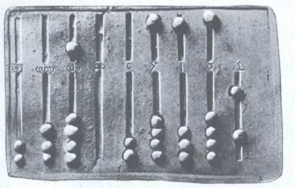
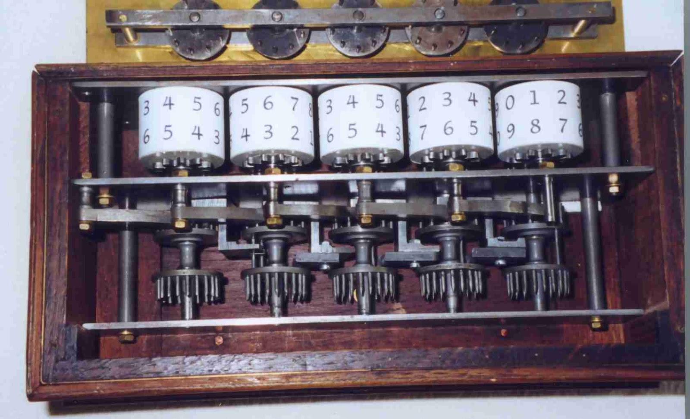
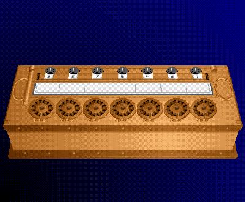
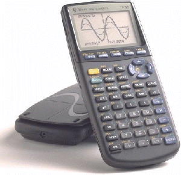
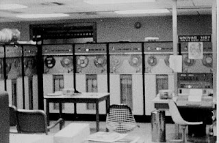

<!DOCTYPE html><html><head><meta charset="utf-8"><meta name="viewport" content="width=device-width, initial-scale=1, maximum-scale=1"><title>TKPPL | Sejarah dan Perkembangan Komputer</title><link rel="stylesheet" type="text/css" href="bower_components/prism/themes/prism.css"><link rel="stylesheet" type="text/css" href="bower_components/todc-bootstrap-main/dist/css/bootstrap.min.css"><link rel="stylesheet" type="text/css" href="styles/main-presentation.css"></head><body></body></html><nav role="navigation" class="navbar navbar-default"><div class="container"><div class="navbar-header"></div><div id="presentation-chooser" class="collapse navbar-collapse"><ul class="nav navbar-nav"><li class="dropdown"><a data-toggle="dropdown" href="#" class="dropdown-toggle">Pilih Presentasi <b class="caret"></b></a><ul class="dropdown-menu"><li><a href="1-Introduction.html">Pengenalan Komponen Komputer</a></li><li><a href="Sejarah.html">Sejarah</a></li><li><a href="Hardware.html">Hardware</a></li><li><a href="Software.html">Software</a></li><li><a href="Brainware.html">Brainware</a></li></ul></li></ul></div></div></nav><article id="presentation"><section><h2>Awal Sejarah Munculnya Komputer</h2><ul><li></li><li>Sejarah komputer diawali dengan penemuan penting dari Charles Babbage berupa alat hitung. Berkat penemuannya itu, ia dikenal sebagai ilmuwan yang paling berpengaruh dalam perkembangan komputer. Kemudian, alat hitung tersebut dikembangkan lebih lanjut secara bertahap hingga kini terciptalah perangkat canggih bernama komputer. Tahapan dalam pengembangan komputer disebut generasi. Ada lima generasi komputer yang masing-masing memiliki cerita tersendiri.</li><li>Perkembangan sejarah komputer telah mengalami masa-masa sulit. Namun, berkat tangan-tangan andal dari para ilmuwan dan teknisi pada waktu itu, perkembangan dari generasi ke generasi terasa begitu mudah dan terorganisir. Komputer terus dikembangkan dengan menyisipkan inovasi-inovasi terbaru. Hingga kini, beberapa perusahaan ternama tengah menggarap komputer berteknologi tinggi dengan nama komputer masa depan.</li></ul></section><Section><ul><li>Sebelum tahun 1940 Sejak dahulu kala, proses pengolahan data telah dilakukan oleh manusia. Manusia juga menemukan alat-alat mekanik dan elektronik untuk membantu manusia dalam penghitungan dan pengolahan data supaya dapat mendapatkan hasil lebih cepat. Komputer yang kita temui saat ini adalah suatu evolusi panjang dari penemuan penemuan manusia sejak dahulu kala berupa alat mekanik mahupun elektronik.</li><li>Saat ini, komputer dan peranti pendukungnya telah masuk dalam setiap aspek kehidupan dan pekerjaan yang lebih dari sekedar perhitungan matematik biasa. Di antaranya adalah sistem komputer di pasar raya yang mampu membaca kod barang belanjaan, pusat telefon yang menangani jutaan panggilan dan komunikasi, serta jaringan komputer dan internet yang menghubungkan berbagai tempat di dunia.</li></ul></Section><Section>	<h2>Komputer ada 4 golongan yaitu:		</h2><ul><li></li><li>1.  Peralatan manual: peralatan pengolahan data yang sangat sederhana, dan faktor terpenting dalam pemakaian alat adalah menggunakan tenaga tangan manusia</li><li>2. Peralatan Mekanik : peralatan yang sudah berbentuk mekanik yang digerakkan dengan tangan secara manual</li><li>3. Peralatan Mekanik Elektronik : Peralatan mekanik yang digerakkan oleh secara otomatis oleh motor elektronik</li><li>4. Peralatan Elektronik : Peralatan yang bekerjanya secara elektronik penuh	</li></ul></Section><Section>	<ul> <h2>Beberapa peralatan yang telah digunakan sebagai alat hitung sebelum ditemukannya komputer:</h2><h3>a. Abacus		</h3></ul><ul><li>Muncul sekitar 5000 tahun yang lalu di Asia kecil dan masih digunakan di beberapa tempat hingga saat ini, dapat dianggap sebagai awal mula mesin komputasi. Alat ini memungkinkan penggunanya untuk melakukan perhitungan menggunakan biji bijian geser yang diatur pada sebuh rak. Para pedagang di masa itu menggunakan abacus untuk menghitung transaksi perdagangan. Seiring dengan munculnya pensil dan kertas, terutama di Eropa, Abacus kehilangan popularitasnya.</li></ul></Section><Section><h3>b. Kalkulator roda numerik (numerical wheel calculator)</h3><ul><li>Setelah hampir 12 abad, muncul penemuan lain dalam hal mesin komputasi. Pada tahun 1642, Blaise Pascal (1623-1662), yang pada waktu itu berumur 18 tahun, menemukan apa yang ia sebut sebagai kalkulator roda numerik (numerical wheel calculator) untuk membantu ayahnya melakukan perhitungan pajak.</li></ul></Section><Section><h3>c. Kalkulator roda numerik 2</h3><ul><li>Tahun 1694 seorang matematikawan dan filsuf Jerman, Gottfred Wilhem von Leibniz (1646-1716) memperbaiki Pascaline dengan membuat mesin yang dapat mengalikan. Sama seperti pendahulunya, alat mekanik ini bekerja dengan menggunakan roda-roda gerigi. Dengan mempelajari catatan dan gambar-gambar yang dibuat oleh Pascal, Leibniz dapat menyempurnakan alatnya.</li></ul></Section><Section><h3>d. Kalkulator Mekanik</h3><ul><li>Charles Xavier Thomas de Colmar menemukan mesin yang dapat melakukan empat fungsi aritmatik dasar. Kalkulator mekanik Colmar, arithometer, mempresentasikan pendekatan yang lebih praktis dalam kalkulasi karena alat tersebut dapat melakukan penjumlahan, pengurangan, perkalian, dan pembagian. Dengan kemampuannya, arithometer banyak dipergunakan hingga masa Perang Dunia I. Bersama-sama dengan Pascal dan Leibniz, Colmar membantu membangun era komputasi mekanikal.</li></ul></Section><Section><h2>Dalam sejarah komputer, ada 5 generasi, yaitu :<h3>1. Generasi Pertama (1944-1959)</h3></h2></Section><Section><ul><li>1. Generasi Pertama (1944-1959)</li><li>Tabung hampa udara sebagai penguat sinyal, merupakan ciri khas komputer generasi pertama. Pada awalnya, tabung hampa udara (vacum-tube) digunakan sebagai komponen penguat sinyal. Bahan bakunya terdiri dari kaca, sehingga banyak memiliki kelemahan, seperti: mudah pecah, dan mudah menyalurkan panas. Panas ini perlu dinetralisir oleh komponen lain yang berfungsi sebagai pendingin. Dan dengan adanya komponen tambahan, akhirnya komputer yang ada menjadi besar, berat dan mahal. 		</li><li>Pada tahun 1946, komputer elektronik didunia yang pertama yakni ENIAC sesai dibuat. Pada komputer tersebut terdapat 18.800 tabung hampa udara dan berbobot 30 ton. begitu besar ukurannya, sampai-sampai memerlukan suatu ruangan kelas tersendiri. Pada gambar nampak komputer ENIAC, yang merupakan komputer elektronik pertama didunia yang mempunyai bobot seberat 30 ton, panjang 30 M dan tinggi 2.4 M dan membutuhkan daya listrik 174 kilowatts.</li></ul></Section></article><script src="bower_components/bespoke.js/dist/bespoke.min.js"></script><script src="bower_components/bespoke-bullets/dist/bespoke-bullets.min.js"></script><script src="bower_components/bespoke-scale/dist/bespoke-scale.min.js"></script><script src="bower_components/bespoke-hash/dist/bespoke-hash.min.js"></script><script src="bower_components/bespoke-progress/dist/bespoke-progress.min.js"></script><script src="bower_components/bespoke-state/dist/bespoke-state.min.js"></script><script src="bower_components/prism/prism.js"></script><script src="bower_components/prism/components/prism-bash.min.js"></script><script src="scripts/main.js"></script><script src="bower_components/jquery/jquery.min.js"></script><script src="bower_components/todc-bootstrap-main/dist/js/bootstrap.min.js"></script>